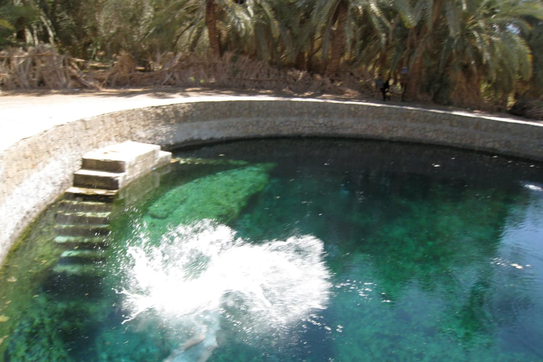
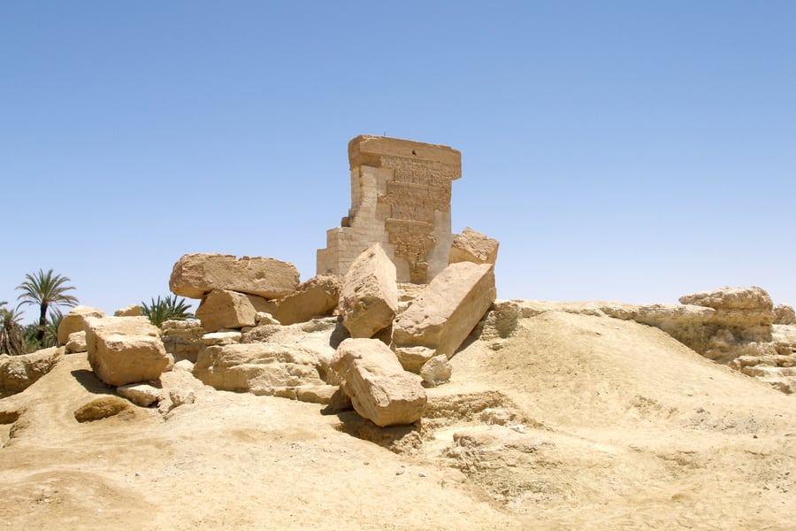
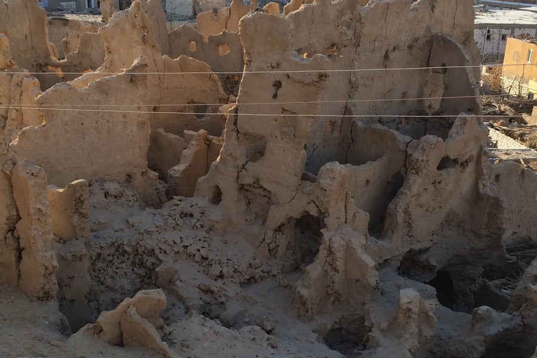

𓂀𓃭𓆣𓇳𓂋𓅃𓃀
Hidden Gem
Siwa Oasis
Egypt's Mystical Desert Paradise
Egypt's Mystical Desert Paradise
Siwa is Egypt's most remote and enchanting destination — a lush oasis hidden deep in the Western Desert near the Libyan border. With crystal-clear salt lakes, ancient Berber culture, crumbling mud-brick fortresses, and the temple where Alexander the Great consulted the Oracle, Siwa feels like stepping into another world entirely.
Archaeological evidence suggests Siwa has been inhabited for at least 12,000 years. The oasis rose to international fame when Alexander the Great crossed the desert in 331 BC to consult the Oracle of Amun, which confirmed him as the son of Zeus-Amun. The indigenous Siwi people speak their own Berber language and maintain distinct cultural traditions. The medieval Shali Fortress, built from kershef (salt-reinforced mud brick), was the heart of the community until a devastating 1926 rainstorm dissolved much of its walls.
Make the most of your visit with these experiences.
4x4 adventure into the endless dunes of the Great Sand Sea with sandboarding and desert camping.
Float effortlessly in Siwa's salt lakes — Egypt's own Dead Sea experience with stunning desert views.
Swim in the natural spring pool surrounded by palm trees where legend says Cleopatra bathed.
Explore the ruins of the Temple of Amun where Alexander the Great received his divine prophecy.
Experience some of the clearest night skies on Earth — the Milky Way is breathtaking.
Explore ancient tombs carved into the honeycomb mountain dating to the 26th Dynasty.
See the beauty that awaits you.




Everything you need to know for a perfect visit.
8-hour drive from Cairo or fly to Marsa Matruh then 4-hour drive. No direct flights.
October to April for mild weather. Summer exceeds 45°C — avoid June-August.
Desert nights drop to near freezing in winter. Bring warm clothes for evening.
Siwa is conservative. Dress modestly and respect Berber customs and privacy.
Very limited ATMs. Bring enough cash for your entire stay.
Stay at a traditional kershef eco-lodge for the most authentic Siwan experience.
October to March for comfortable weather. Full moon visits to the desert are unforgettable.
Immerse yourself in the wonder of Siwa Oasis. Let this journey inspire your next Egyptian adventure.

Let our local experts craft the perfect itinerary for your Egyptian adventure.